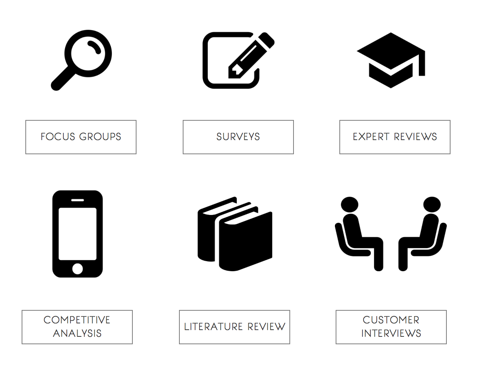
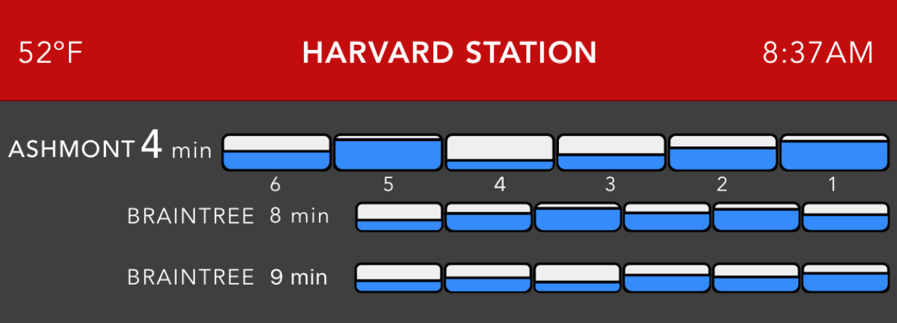
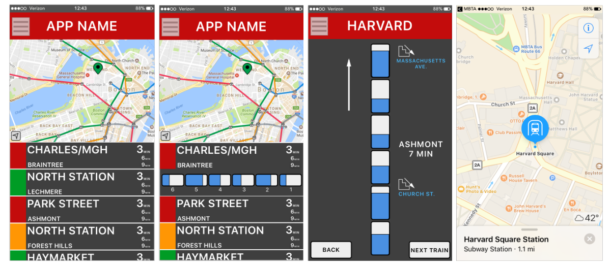

The Problem:
Each year, Americans throw away billions of bounds of food.
Food that is thrown away and never consumed contributes to both
environmental problems and individual economic losses. From the
environmental perspective, when organic matter decays without oxygen,
as it does buried in landfills, it releases methane, which is an extremely
potent greenhouse gas contributing to climate change.
The Solution:
The following project aims to develop a mobile application that will
combat food waste by monitoring food in household refrigerators.
The application will allow individuals to reduce the amount of food
that is never consumed, which will reduce the amount of food that is
thrown away.
User Research

After finalizing our user research, we found that in order to create an application
that individuals in our target audience will utilize and gain from, we will need a
way to make our app social by connecting users with each other and allowing them to
work together to mitigate wasteful habits.
Expert Reviews, Focus Groups, and Usability Testing
After conducting expert reviews, focus groups, and usability testing, we obtained feedback that lead us toward our final
design. The main feedback we received was the following:
(1) The different alignments and sizes of texts seemed disorganized
(2) The information display had good information, but too much new information for regular users to want to read
(3) Participants felt that the colors on the display were too overwhelming
Final Designs
The design we recommend is a 3 part design that consists of (1) an information display at the entrance, (2) a platform
display, and (3) a mobile application.

Information Display
We found that users wanted to see the displayed information as early as possible. For this reason, we designed an information
display that will be on display at the entrance of the station. From our user requirements and usability testing, we
found that users wanted a simple display that clearly showed the capacity of each car. The blue was chosen because users
felt that the red, yellow, and green cars were too colorful.
Platform Display
From our initial focus group feedback, we decided to go with a design that displayed a visual of each car’s crowding
level above the train. Again, our user testing participants preferred the standard blue to display crowding levels.

Mobile Application
From our usability testing, we found that users generally had a really easy time navigating through the application.
All users appreciated having a mobile application in addition to the informational displays at the platform because
this would allow them to check the crowding level of stations before ever entering the stations.